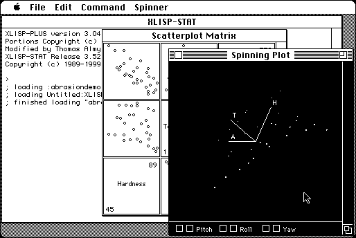

Download
xlispstat-3-52-16.zip (791K) XLISP-STAT 3-52-16 application and suppporting files repackaged into a zipped hfs disk image and checksum file. The disk image can be mounted with Mini vMac.
xlispstat-3-52-16-genapp.sea.hqx (500K) XLISP-STAT 3-52-16 application in the original format.
xlispstat-3-52-16-files.sea.hqx (713K) XLISP-STAT 3-52-16 suppporting files in the original format.
copyright: Luke Tierney
mod date: Jan 9, 2000
license: BSD-like open source
from url :
Lisp-Stat Information
A Lisp based “extensible statistical computing environment for data analysis, statistical instruction and research, with an emphasis on providing a framework for exploring the use of dynamic graphical methods.” Source code is available (below).

Download Source (for 3-52-20, changes since 3-52-16 said not to affect Macintosh 68000 version)
xlispstat-3-52-20.zip (1.6M) XLISP-STAT 3-52-20 source repackaged into a zipped hfs disk image and checksum file. The disk image can be mounted with Mini vMac.
xlispstat-3-52-20.tar.gz (1.5M) XLISP-STAT 3-52-20 source in the original format.
If you find these downloads useful, please consider helping the Gryphel Project, which hosts them.
Here are the md5 checksums for the downloads, signed with Gryphel Key 5:
--------- GRY SIGNED TEXT --------- f5c003512271a64a075d8c00533a55ac xlispstat-3-52-16.zip 4817687c6389e21c1b101b95d0a4ffab xlispstat-3-52-16-genapp.sea.hqx a6043358655c488623a7fbdb280e6cae xlispstat-3-52-16-files.sea.hqx e5f5558469106ef00ad9070f1f80c5e3 xlispstat-3-52-20.zip 93ec54218aaa450f0909e4a3ba22e08f xlispstat-3-52-20.tar.gz ------- BEGIN GRY SIGNATURE ------- Gry/4Xa8CFcUzxdN/AAqIoXphPyClzxoGwbKHNikKHCLAdRhff5TBAnYJUEGG7wO jGPkSE3ZwhDRbihwP9kNUQbYjDnJCy4cTuLSevG8LH37MDdRsue/jv/PqlrQxf3e GZY9+rU2iZUj8vAk+aqOgCjhpw8RhLkp/JlKQBmDnTQiUEBZRhXcY9v6gVRI4XIv -------- END GRY SIGNATURE --------